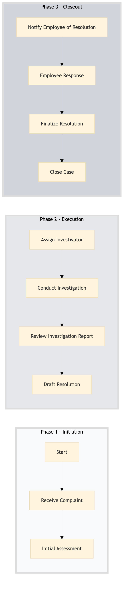

| Role | Steps |
|---|---|
| Human Resources Manager | 1.1 1.2 2.1 2.3 2.4 3.1 3.3 3.4 |
| Investigator (HR Specialist) | 2.2 |
| Step | Name | Role | System | Input | Output | KPI | Dec? | Exc? | Pain Point / Risk |
|---|---|---|---|---|---|---|---|---|---|
| 1.1 | Receive Complaint | Human Resources Manager | Oracle OPERA Cloud | Employee complaint form | Complaint registered in Oracle OPERA Cloud | Less than 5 minutes | N | Y | Delays in recording complaints can lead to employee dissatisfaction. |
| 1.2 | Initial Assessment | Human Resources Manager | Oracle OPERA Cloud | Complaint registered in Oracle OPERA Cloud | Assessment report | Less than 10 minutes | Y | N | Inconsistent assessment criteria can affect the fairness of grievance handling. |
| 2.1 | Assign Investigator | Human Resources Manager | Oracle OPERA Cloud | Assessment report | Investigator assigned | Less than 30 minutes | N | Y | Overlooking key details during the assignment can lead to biased investigations. |
| 2.2 | Conduct Investigation | Investigator (HR Specialist) | Oracle OPERA Cloud, Workday HCM | Complaint details and investigator's guidelines | Investigation report | Less than 2 hours | Y | N | Lack of thorough investigation can result in unresolved issues. |
| 2.3 | Review Investigation Report | Human Resources Manager | Oracle OPERA Cloud, Workday HCM | Investigation report | Reviewed and approved investigation report | Less than 1 hour | Y | N | Inadequate review can lead to incorrect decisions. |
| 2.4 | Draft Resolution | Human Resources Manager | Oracle OPERA Cloud, Workday HCM | Reviewed investigation report | Resolution draft | Less than 1 hour | N | Y | Poorly drafted resolutions can escalate issues. |
| 3.1 | Notify Employee of Resolution | Human Resources Manager | Oracle OPERA Cloud, Workday HCM | Resolution draft | Notification sent to employee | Less than 30 minutes | N | Y | Delayed notifications can cause further dissatisfaction. |
| 3.2 | Employee Response | Employee | Oracle OPERA Cloud, Workday HCM | Notification sent to employee | Response from employee | Within 7 days | Y | N | Employee silence may indicate unresolved issues. |
| 3.3 | Finalize Resolution | Human Resources Manager | Oracle OPERA Cloud, Workday HCM | Employee response | Final resolution document | Less than 1 hour | N | Y | Inflexible final resolutions can lead to ongoing issues. |
| 3.4 | Close Case | Human Resources Manager | Oracle OPERA Cloud, Workday HCM | Final resolution document | Case closed in Oracle OPERA Cloud | Less than 5 minutes | N | Y | Unresolved cases can lead to ongoing employee dissatisfaction. |
HR-TL-06 outlines the process for handling employee relations and grievances at a full-service Marriott hotel. This ensures timely resolution of issues, maintaining a positive work environment, and compliance with company policies.